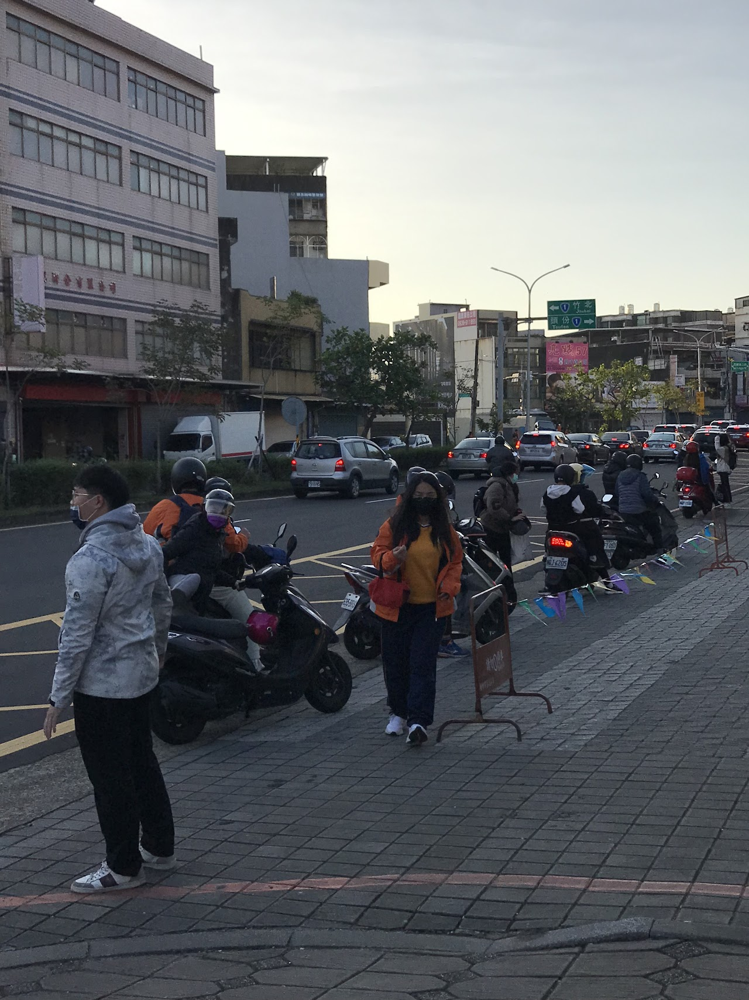
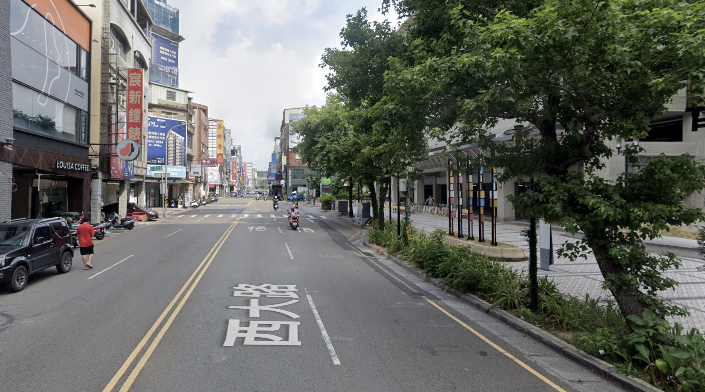
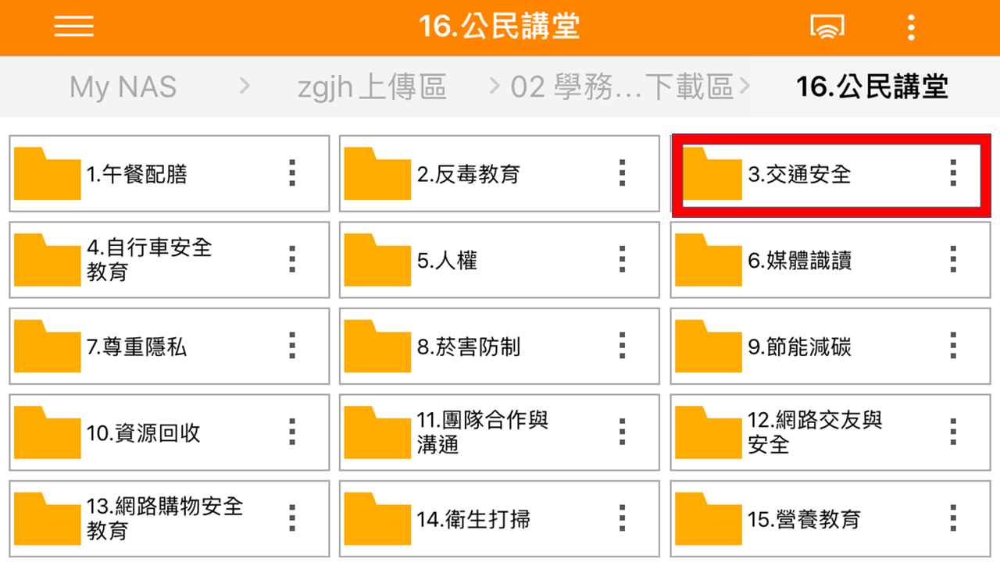
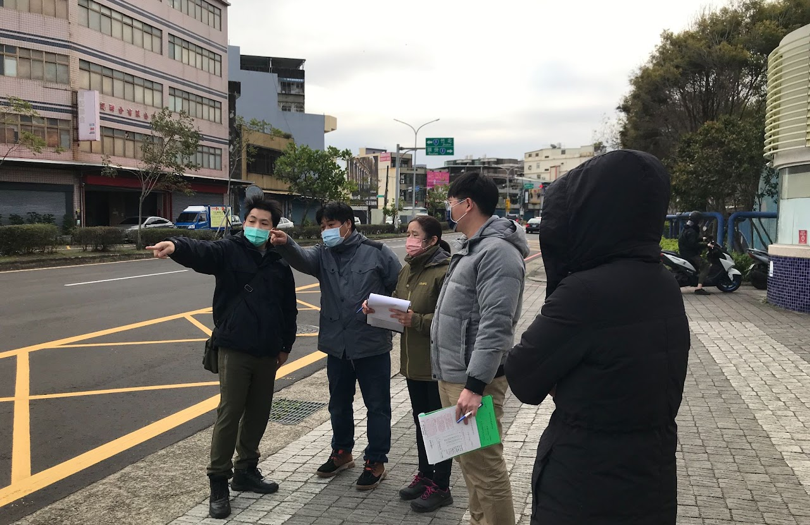
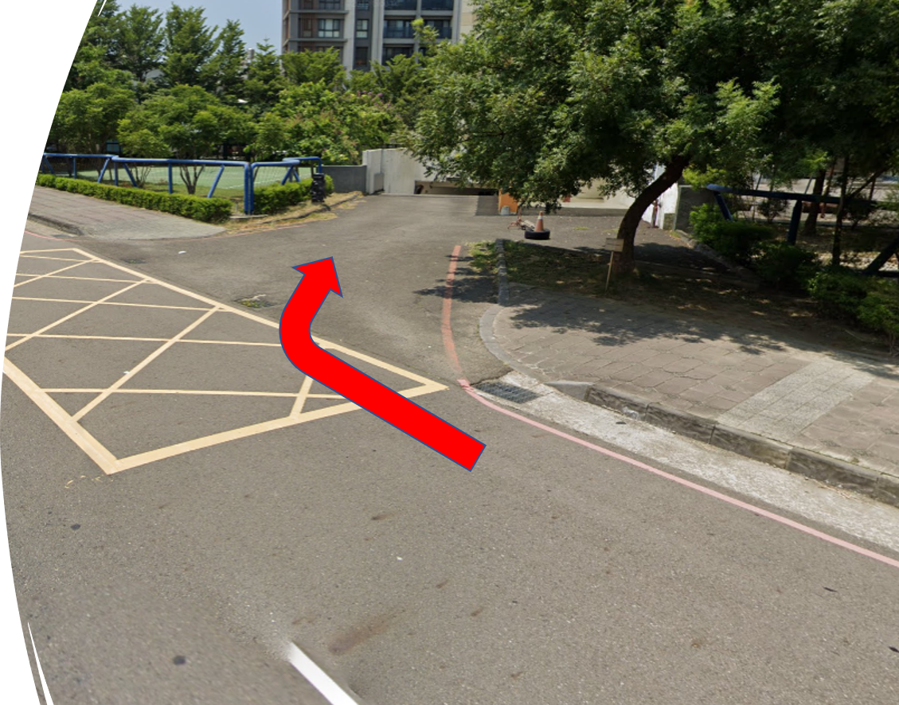
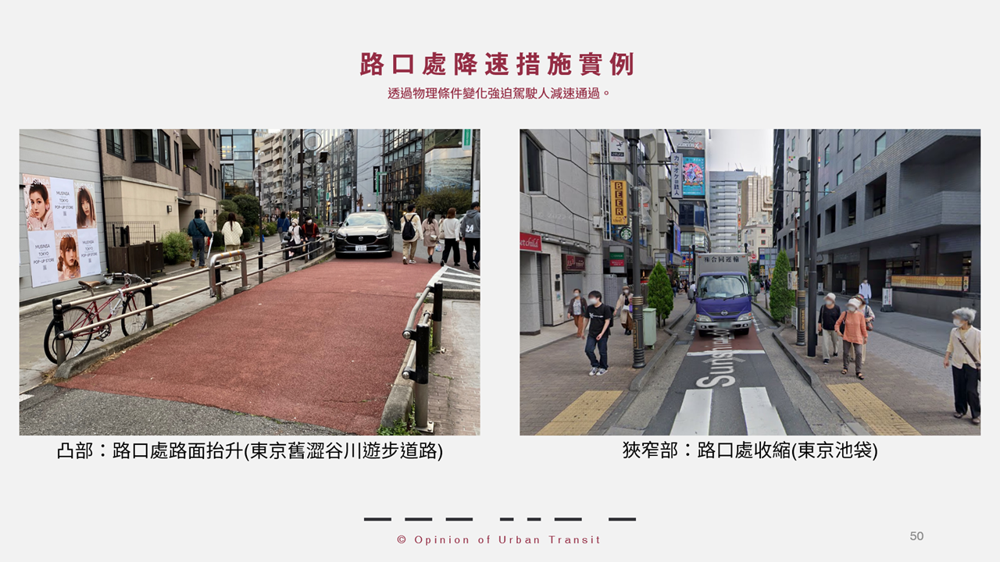
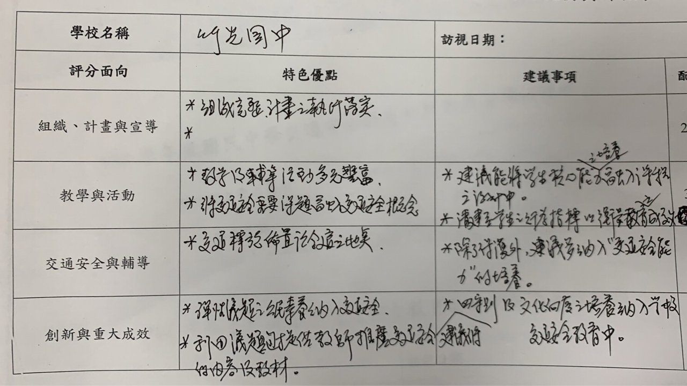

交通安全訪視經驗分享
訪視可以打分，安全不能靠打分
從三次訪視、低效度評鑑，走向人本交通與教育現場的合理角色
竹光國中 學務主任 黃隆偉
交通安全訪視經驗分享
從三次訪視、低效度評鑑，走向人本交通與教育現場的合理角色
竹光國中 學務主任 黃隆偉
這場分享不只是成果展示
三次訪視，為什麼會得到三種不同結果？
文件齊全，能代表道路更安全嗎？
交通安全應打造什麼樣的人本環境？
教育可以做什麼，制度必須承擔什麼？
希望最後，我們能把「通過訪視」與「真正降低風險」分開思考。
先看最重要的證據
資料幾乎一樣。如果真實安全沒有劇烈變動，名次到底代表什麼？
來源：使用者提供之《交通安全訪視經驗分享115.pptx》第 5–6 頁。
114 年優等，到底做對了什麼？
先把有用的留下來
不是教大家做更厚的成果冊，而是拆出能複製、能省時間、能真的降低風險的做法。
案例來源：竹光國中 114 年交通安全訪視網站與使用者原始簡報。
把成果展示改寫成問題解決的故事
不是照四大指標逐項報告，而是從真實風險出發，讓教學、管理與工程接起來。
問題 1/7｜我們看見什麼風險？
先看現場衝突，再決定分流、停等與導護配置。
一眼看見尖峰時段的壓力。

來源：竹光國中 114 交通安全網站 3-5-1。
問題 1/7｜從駕駛視角看風險

無號誌路口
行人可能就在近端，駕駛注意力卻被遠方綠燈拉走。
叫學生「自己小心」，不能讓風險消失。
來源：使用者原簡報第 9 頁。
問題 2/7｜如何用調查確認問題？
不是只靠感覺；先確認問題，再決定要做什麼。
來源：網站 3-1-1、1-2-1。
問題 3/7｜如何利用既有課程與時間？
每週既有導師時間
素材集中在網路，導師直接取用；不另開一門課。
來源：網站 4-3「學校自評特色與優點」。
問題 3/7｜共用既有素材
行政端整理主題資料夾，教師在導師時間選用；交通安全只是共享素材庫的一部分。

來源：使用者原簡報第 27–28 頁。
問題 3/7｜不另開課，借學科教風險
來源：網站 2-1-1、2-1-2。
問題 3/7｜一個可直接帶走的跨域案例
相似形不只算比例
看得見你，你看得見我？
用因材網題目模擬大車視線死角，再搭配真實影片，讓抽象幾何變成風險判斷。
來源：網站 2-1-1；使用者原簡報第 23 頁。
問題 4/7｜學校自己可以先改什麼？
校內再做人車分流，接送區與學生動線分開。
來源：網站 1-2-1、3-2-1、3-5-1。
問題 4/7｜校內機制必須能持續
來源：網站 3-3-1、3-3-2。
問題 4/7｜資料回到學生的學習
制止、留下勸導紀錄、必要時依規定處理。
了解原因 → 同理處境 → 教會可調整策略。
事故熱點另整理至班親會資料。來源：網站 3-4-1、3-4-2。
問題 5/7｜哪些改變需要共同完成？
真正的亮點，是讓工程發生
學校沒有把危險的最後一哩，再丟回給學生「自己小心」。
來源：網站 4-4「學校創新特色」。
問題 5/7｜工程不會只靠學校完成
共同會勘｜協商停車｜討論標線｜確認可行方案
來源：網站 4-4；112.6 至 113.5 的會勘、協調與施工紀錄。
問題 5/7｜現場把問題說清楚

學校｜交通處｜教育處｜里長｜居民
共同看見，才有共同決議。
來源：竹光國中 114 交通安全網站 4-4。
問題 6/7｜現場真的改變了什麼？
這些是可被現場看見的改變，不是照片數量。
來源：網站 4-4；僅描述工程產出，不宣稱已證明事故下降。
問題 6/7｜資料、產出與結果要分開
會議紀錄、活動照片、網站頁面。
多出行走空間、號誌更可辨識、跨單位有決議與時程。
事故、速度與衝突資料，仍要持續追蹤。
案例來源：網站 4-4。事故與車速結果仍需另行追蹤。
問題 7/7｜還剩下什麼缺口？
校內人車分流已用紅箭頭標示方向；校外 4-4 紀錄仍有住戶門口暫不劃設的缺口。
已完成哪一段？還缺哪一段？下一步由誰接手？

來源：網站 3-2-1、4-4；紅箭頭為原照片標示，部分校外路段仍有缺口。
把教授回饋與訪視經驗，翻成六個可檢核問題
依原始教授回饋與本案經驗轉譯；課程融入、交通能力指標、四守則與交通素養為原始建議。
不能只說「我們有做」，要逐項拿出證據與界線
案例來源：114 年訪視網站與使用者原始簡報；本頁保留已完成事項與證據缺口。
七個問題，形成一套可持續的工作流程
不要複製成果冊，要複製這七個問題。
案例轉譯：竹光國中 114 訪視網站。
組長工具 1/5｜不是先辦活動，先走一次現場
只記錄可觀察的事實：在哪裡、什麼時段、誰受到影響。
可下載工具包：工作表「01風險盤點」。
組長工具 2/5｜不用大數據，只問會影響決策的問題
可直接複製到 Google 表單；完整題目見工具包「02通學調查」。
組長工具 3/5｜不另外加課，先找現有課程
先確認學生要學會什麼，再決定借哪一門課。
更多範例與空白列見工具包「03課程媒合」。
組長工具 4/5｜把學校做不到的事情交給正確單位
不是寫「請協助改善」，而是讓對方知道要處理哪一件事。
可直接填寫的表單見工具包「04工程提報」。
組長工具 5/5｜用填寫完成的案例示範下一棒
工作簿包含空白表格、下拉選單、成果追蹤摘要與竹光國中填寫範例。
訪視的測量邊界
人力、經費、行政時間
課程、宣導、網站
活動、照片、成果冊
速度、事故、通學風險
前三者可以證明「做過」；只有結果能回答「有沒有更安全」。
評估架構參考：UK Government, Magenta Book（process / impact / outcomes）。
不是反對評鑑，是要求評鑑回答正確問題
評的是交通安全、行政完整度，還是簡報表現？
相同證據換一組人，結果會不會完全不同？
高分是否對應更低的速度、事故與通學風險？
學校是否被迫把時間花在可拍照、可裝訂的工作？
本頁是依三次訪視經驗提出的效度檢核，不宣稱已完成正式心理計量研究。
教育現場已經 overloading
OECD TALIS 2024：平均約 52% 教師把過多行政工作視為壓力來源。
新增任務前，請先說明：
要刪掉什麼？
來源：OECD, Results from TALIS 2024, “The demands of teaching”.
把注意力拉回真實世界
臺灣 2025 年道路交通事故 30 日內死亡人數
WHO 估計 2025 年全球道路交通死亡；道路傷害仍是 5–29 歲主要死因
來源：交通部 168 交通安全入口網（2026-03-25 公布 2025 全年）；WHO Road traffic injuries（2026-07-20，2025 年資料）。
重新定義交通安全教育的目的
目的不是訓練永不犯錯的用路人，而是打造犯錯仍能回家的環境。
這就是人本交通，也是 Safe System 的倫理起點。
概念來源：FHWA Zero Deaths and Safe System；WHO Safe System approach。
國際共同語言
來源：FHWA, Zero Deaths and Safe System（更新至 2025-08-06）。
責任必須被看見
不能獨自背負安全結果
任何一層失效，其他層都應降低後果；這才叫系統。
來源：FHWA Safe System elements。
教育的邊界
FHWA：只提供資訊，通常不足以改變行為。教育必須和工程、執法與制度一起發生。
不要把工程怠惰的後果，歸咎到教育上。
來源：FHWA Road Safety Fundamentals, Unit 2；引言概念源自使用者原簡報第 14 頁。
在地經驗
一句「十次車禍九次快」，敵不過讓駕駛自然減速、縮短穿越距離、提升可見性的工程。
教育教判斷；環境讓正確判斷做得到。

案例來源：使用者原簡報第 10–11 頁；圖片為臺北路口降速措施案例。
國外不是更會宣導，而是更早改變系統
1997 年成為國家政策：死亡與重傷不可接受，設計者必須承擔責任。
道路功能、速度與使用者要相容；安全要先被設計進去。
來源：Swedish Transport Administration / Vision Zero Academy；SWOV Sustainable Road Safety fact sheet。
交通安全教育的核心問題
教的不是一套永遠不變的規則，
而是遇到新的路況，仍能做出安全判斷的能力。
風險辨識｜系統理解｜公民參與
內容整合：本專案 GOALS.md、Safe System 與使用者原簡報第 20–25 頁。
教育仍然重要，但角色要精準
看見死角、速度與脆弱處境，做出可遷移的判斷。
辨識道路、車速、衝突點，以及設計如何影響行為。
調查通學路、提出方案，向公部門清楚發聲。
內容整合：Safe System、人本交通與使用者原簡報第 20–25 頁。
不用再新增一套大型課程
教學轉譯建議：觀察 → 系統語言 → 設計 → 公民表達。
影片不是答案，是討論的起點
非官方影片用於引發觀察與比較；政策事實請回到 FHWA、WHO、SWOV 等來源。
不加課，把零散議題變成進程
改寫自使用者原簡報第 25–26 頁。
減量，才有可能做深
共同責任不是共同甩鍋
建議的新評估邏輯
是否建立跨局處責任、風險提報與回應機制？
完成哪些工程、課程與學生提案？品質如何？
車速、停讓、衝突點、通學感受與系統理解是否改善？
評分者校準、多重證據、公開準則、回饋與申訴。
評估設計參考：UK Government Magenta Book；Safe System proactive safety。
請把制度改成支持安全，而不是生產資料
本頁為演講者依教育現場經驗提出的制度倡議。
最後，不要只問學校做了幾份資料
請問孩子走出校門時，這個系統容許他犯一次錯嗎？
案例資料網站
網站：https://sites.google.com/mail.zgjh.hc.edu.tw/safe/首頁
帶回去繼續看
完整來源與使用說明見本專案 SOURCES.md。
附錄｜案例證據
資料應保留；但它證明的是工作歷程，不等於道路風險下降。

案例來源：使用者原簡報第 32–36 頁。